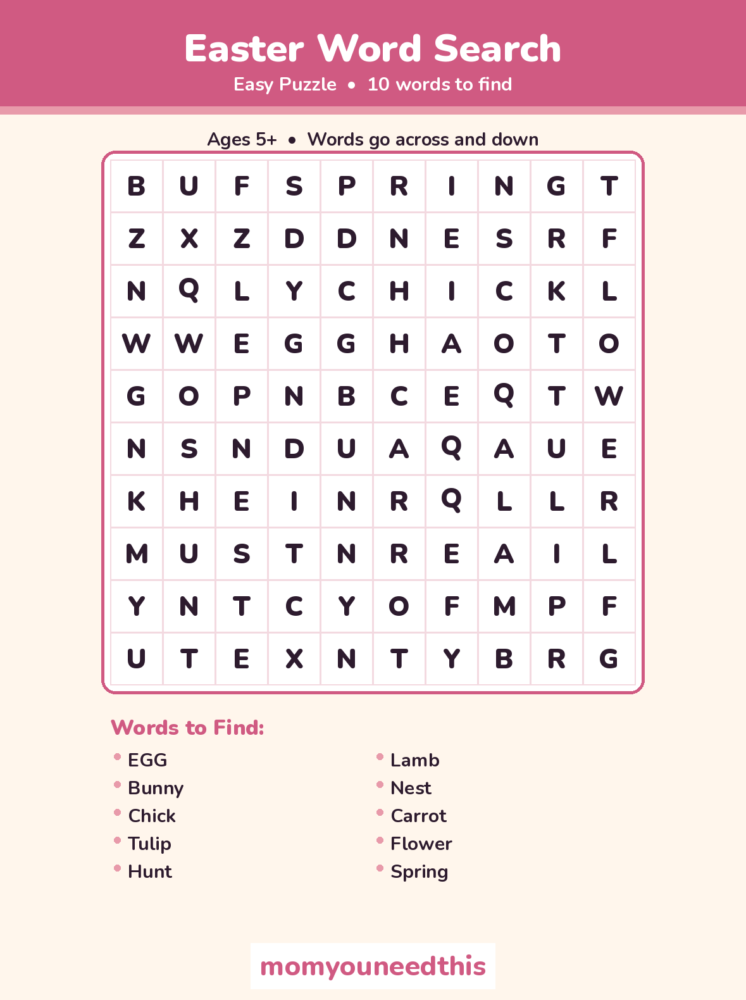
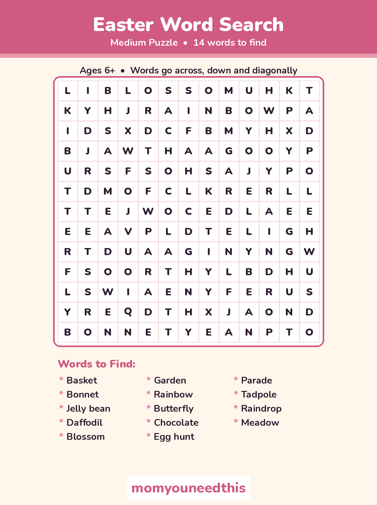
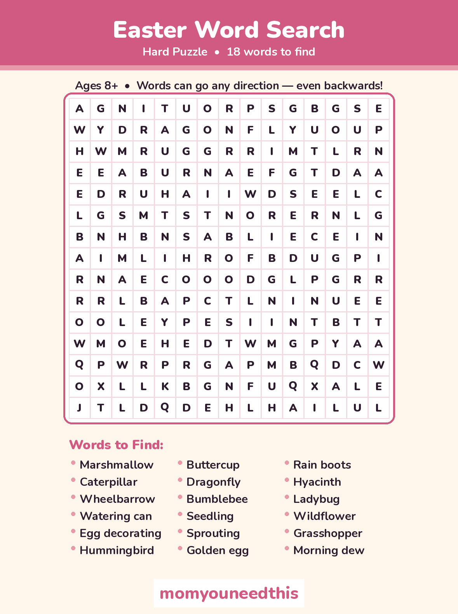
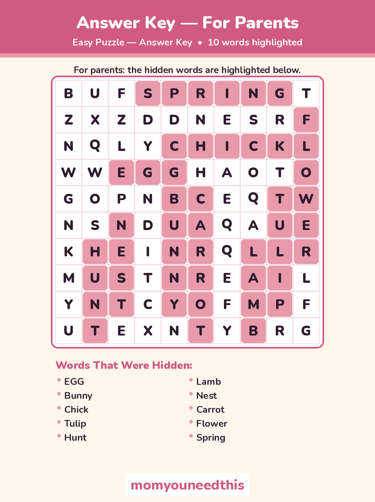
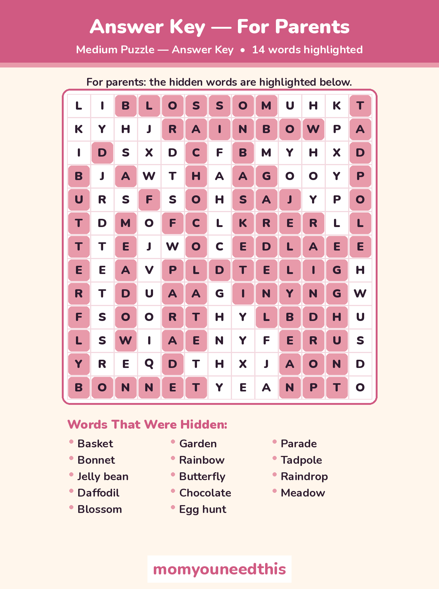
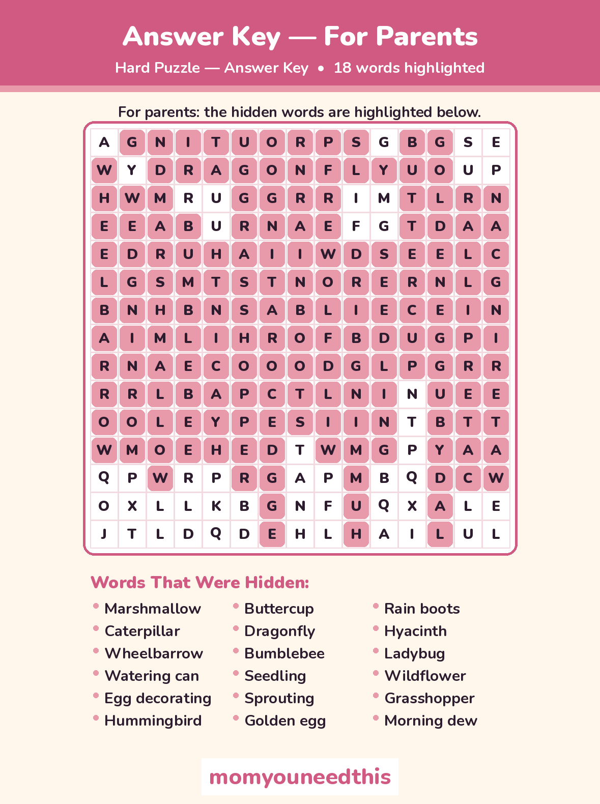

Easter Word Search Printable 3 Free Puzzles — Easy, Medium & Hard
Looking for a calm spring activity? This Easter word search printable set gives kids three graded puzzles — start easy with eggs and bunnies, then work up to jelly beans and chocolate. Print a puzzle, grab a pencil, and hunt for spring words hidden across, down, diagonally and even backwards.
Last updated: October 25, 2026
Quick Answer
This free Easter word search printable set includes three puzzles: an easy 10×10 grid with 10 words, a medium 13×13 grid with 14 words, and a hard 15×15 grid with 18 words. Every puzzle comes with a parent answer key, and all six sheets are free to print at home.
At a Glance
- Puzzles: 3 — Easy, Medium & Hard
- Words to find: 42 total (10 + 14 + 18)
- Grids: 10×10, 13×13 & 15×15
- Printables: 6 sheets — 3 puzzles + 3 answer keys
- Ages: 5+ for Easy, 8+ for Hard
- Cost: Free — print at home
🐰 Pick Your Level
Three puzzles, three levels of challenge — so a new reader and an older sibling can each hunt at their own pace with the same spring word list feeling.
Easy — 10×10 grid, 10 words.
Words run across and down only, and they are short and familiar: egg, bunny, chick, tulip, lamb and nest. A gentle first word search for ages 5 and up.
Medium — 13×13 grid, 14 words.
Diagonals join the hunt, and the words grow up a little: basket, bonnet, jelly bean, daffodil, butterfly and chocolate. Best for ages 6 and up.
Hard — 15×15 grid, 18 words.
Words can run in any direction — including backwards. Marshmallow, caterpillar, wheelbarrow, egg decorating and hummingbird are in there somewhere. A real challenge for ages 8 and up.
🧠 Why Word Searches Are Quiet, Real Practice
A word search looks like a quiet-time game, and it is — but a child scanning a grid for the letters B-U-N-N-Y is doing focused letter recognition the whole time. Matching the word on the list to a string of letters in the grid builds the habit of looking at how words are spelled, letter by letter and in order, which is the same attention early reading asks for.
The second skill is patience. A hidden word does not announce itself, so kids learn to scan slowly, row by row, and keep going when the first pass turns up nothing. That makes a puzzle a handy calm activity for the week before Easter, a classroom spring party or a quiet moment between the egg hunt and dinner.
✂️ Print Your Easter Word Search Printable Puzzles
Choose a puzzle below and print it on its own — every puzzle sheet is unsolved, with its word list printed right under the grid. The three answer keys sit below the puzzles, clearly marked for parents, so help is nearby without spoiling the hunt.

✂️ Download Your Free Easy Word Search
Easy puzzle — 10×10 grid, 10 words, across and down only.
⬇️ Download Free Easy Puzzle 🖨️ Print🎁 Free printable for ages 5+

✂️ Download Your Free Medium Word Search
Medium puzzle — 13×13 grid, 14 words, with diagonals.
⬇️ Download Free Medium Puzzle 🖨️ Print🎁 Free printable for ages 6+

✂️ Download Your Free Hard Word Search
Hard puzzle — 15×15 grid, 18 words, any direction, even backwards.
⬇️ Download Free Hard Puzzle 🖨️ Print🎁 Free printable for ages 8+

✂️ Download the Easy Answer Key — For Parents
Easy answer key — all 10 words highlighted in the grid.
⬇️ Download Free Answer Key 🖨️ Print🎁 Free printable for parents

✂️ Download the Medium Answer Key — For Parents
Medium answer key — all 14 words highlighted in the grid.
⬇️ Download Free Answer Key 🖨️ Print🎁 Free printable for parents

✂️ Download the Hard Answer Key — For Parents
Hard answer key — all 18 words highlighted in the grid.
⬇️ Download Free Answer Key 🖨️ Print🎁 Free printable for parents
🔑 A Note on the Answer Keys
The keys are separate sheets on purpose. Keep them in a drawer or on your phone while your child hunts, and bring one out together at the end — checking a found word against the key is a satisfying finish, and it quietly shows a stuck hunter where to look next time without anyone handing over the answer mid-search.
🖨️ How to Use These Word Searches
- Pick a level. Start younger kids on the Easy Easter word search printable and let older kids jump straight to Medium or Hard — every level uses its own grid and word list.
- Read the word list together. Say each word out loud before the hunt starts. A child who has just heard and read 'daffodil' spots its letters much faster.
- Hunt, circle, cross off. Circle each word in pencil as it is found, then cross it off the list under the grid so the remaining words stay easy to track.
- Check it together. When the list is done — or one word will not budge — open the matching answer key and find the last words side by side.
🐰 More Seasonal Word Searches
🎄 Christmas Word Search
Three festive puzzles with 42 Christmas words, from Santa to gingerbread. Try the Christmas puzzles.
❄️ Winter Word Search
Three graded winter puzzles with parent answer keys, at the same three levels as this page. Try the winter puzzles.
🌷 Spring Word Search
Three graded spring puzzles with parent answer keys, at the same three levels as this page. Try the spring puzzles.
☀️ Summer Word Search
Three graded summer puzzles with beach, watermelon and ice cream words. Try the summer puzzles.
🎃 Halloween Word Search
Three graded, kid-gentle Halloween puzzles with pumpkins, ghosts and candy. Try the Halloween puzzles.
❓ Easter Word Search FAQ
Is this Easter word search printable really free?
Yes — all three puzzles and all three answer keys on this page are free to download and print at home, with no signup. Print one copy or a whole stack for a class Easter party.
What ages are these word searches for?
The easy 10×10 puzzle suits most kids from about age 5, the medium 13×13 puzzle from about age 6, and the hard 15×15 puzzle — with diagonals and backwards words — from about age 8. Younger children can still enjoy the easy grid with an adult hunting alongside.
My child is just learning to read — which puzzle should we start with?
Start with the easy puzzle. Its 10 words are short and familiar — egg, bunny, chick, tulip, lamb and nest — the grid is the smallest of the three, and every word runs only across or down, so a new reader can follow each row in one direction.
Can I print these puzzles for my classroom?
Yes — print as many copies as your class needs. Each puzzle is a single sheet with its word list on the same page, and the matching answer key is a separate sheet you can keep at your desk.
Are the answers included?
Yes — every puzzle has its own answer key sheet, clearly titled 'Answer Key — For Parents', with each hidden word highlighted in the grid. The keys are separate downloads above, so the puzzle sheets themselves stay unsolved.